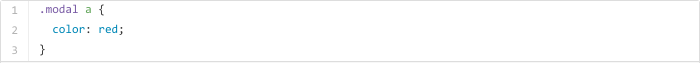
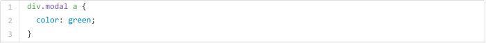
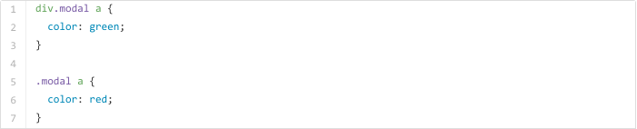
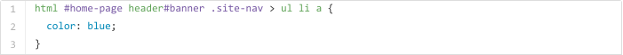
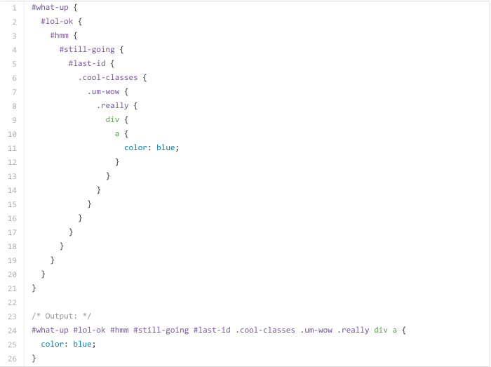

Daniel Eden | Aug 7
Let me throw you a scenario you be very familiar with.
You're working ona feature for a website or web app that required some overriding or other changed to the style of a component. You jump into Web Insoector, grap the class for the element(s) in question, and write some new css. Easy. However, after refreshing the page, none of the changes have been made - or some have, but not all of thhm. Maybe the color changes, but the 'margin-left: auto' you gave the element remains the same.
This is usually because of
This selector has a low specificity, since it's just targeting an 'a' element. Let's increase the specificity.
This CSS is targeting 'a' elements inside any element with a class of 'modal'. We could add a condition to the class selctor, too:
Now the CSS is targeting 'a' elements inside 'div's with a class of 'modal'.
The more conditions there are in a CSS selector, the higher its specificity. Specificty trumps the cascade, so in this case:
Even though the rule on line 5 appears later in the stylesheet, its soecificty is not as high as the rule on line 1, so 'a' elements inside 'div's with a class of 'modal' will appear green.
Now that we understnad the implicaiton of selector specificty, let's get some hard numbers to help us diagnose specificty issues.
People smarter than myself managed to come uo with a nuerical reoresentation of CSS specificity, allowing us to calculate specificty scores. It works out like this:
Let's calculate the score for one of the earlier examples.
This selector has:
Giving it a total specificity score of 215. You'd have to write a rule of equal or higher specificity to override the style applied by it.
With the core in mind, take a look at the specificty graoh for Dropbox's 'main.css' here. You can see the graph spikes at a score of 532. That means a CSS selector that looks something like this:
Bear in mind this is the specificity of an actual selector in Dropbox's CSS today. Yikes.
Avoiding writing overly-specific CSS rules takes just being mindful of a couple of things.
Understanding how CSS specificty works will make those things much easier, and if your made it this far, you should have a pretty good understanding by now!